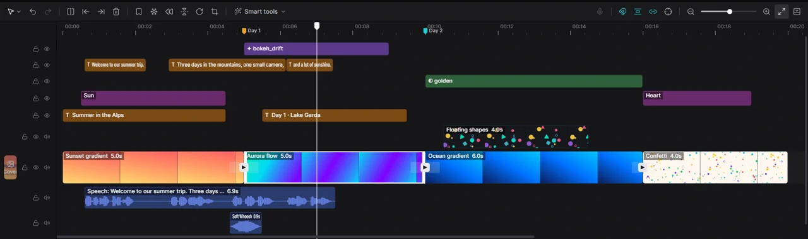

For humansEditing6 min read
Timeline editing
The timeline is where your video takes shape. This page covers everything you do there, from the first cut to markers and speed changes.

How the timeline is organised
- Main track — the lowest video track, with the Cover button at its start. Your story goes here. Clips on it always sit next to each other without gaps (see magnet).
- Tracks above the main track — overlays (picture-in-picture), stickers, text and captions, effects, filters and adjustment layers. What is higher covers what is lower.
- Audio tracks — below the main track: music, voice-overs and sound effects.
- Tracks are created automatically when you add something and disappear when they become empty.
- Each clip shows its name and length. Video clips show little pictures (a filmstrip), audio clips a waveform. Small badges between clips are transitions.
Move around
- Playhead. Click the ruler or drag along it to move the playhead; the player shows that moment. Space plays and pauses, ← / → step one frame.
- Zoom. Hold Ctrl and turn the mouse wheel over the timeline, press Ctrl+= / Ctrl+-, or use the zoom slider on the right of the toolbar. Zoom to fit (the arrows button next to it) shows the whole video.
- Scroll. The mouse wheel scrolls up and down when there are many tracks; Shift+wheel scrolls left and right.
- Preview axis (S or the target button on the right of the toolbar). When it is on, the player shows the frame under your mouse pointer as you hover over the timeline — a quick way to find a moment without moving the playhead.
Select clips
- Click a clip to select it. Its settings appear in the inspector on the right.
- Shift+click or Ctrl+click adds clips to the selection (or removes them).
- Drag a rectangle starting on an empty part of the timeline to select every clip it touches. Hold Shift or Ctrl to add to the current selection.
- Ctrl+A selects all clips on unlocked tracks.
- Click an empty spot to deselect everything (this also moves the playhead there).
Move and trim
- Move: drag a clip left or right, or up and down to another track of the same kind. A video can move between the main track and overlay tracks; if the spot is taken, Kadr makes a new track for it.
- Trim: point at the left or right edge of a clip — the cursor turns into a double arrow — and drag to shorten or lengthen it. A video can't get longer than its original recording.
- While you drag, a guide line shows where the clip will snap.
Split (cut)
At the playhead: move the playhead to where you want the cut and press Ctrl+B or click Split in the toolbar. If a clip is selected and under the playhead, that clip is cut; otherwise the main-track clip under the playhead is.
With the Split tool: press B (or pick Split in the tool menu at the left of the toolbar). The pointer becomes a cross — click anywhere on a clip to cut it there. Press A to go back to the Select tool.
Delete
- Delete (or Backspace) removes the selected clips. On the main track the following clips slide left to close the gap.
- Q — Delete left: removes the part of the clip before the playhead.
- W — Delete right: removes the part after the playhead.
The fastest way to tidy a talking video: play it, stop where a mistake starts, press Q… or select a stretch and press Delete. Even faster: let Kadr cut pauses and filler words for you — see editing by transcript and Remove silence.
Copy, paste and duplicate
- Ctrl+C copies the selected clips, Ctrl+X cuts them, Ctrl+V pastes at the playhead.
- Ctrl+D duplicates the selected clip right after itself.
Right-click menus
| Right-click on… | You get |
|---|---|
| A clip | Copy, Cut, Paste, Split, Duplicate, Freeze frame and Extract audio (video clips), the Smart tools that fit the clip, Delete |
| An empty spot | Paste, Add marker here |
| A marker on the ruler | Delete marker |
| A transition badge | Select transition, Apply to all, Remove transition |
More clip tools in the toolbar
| Button | What it does |
|---|---|
| Freeze frame | Inserts a 3-second still of the frame under the playhead into the video clip. |
| Reverse | Plays the selected video backwards. Click again to play it forwards. |
| Mirror | Flips the picture left to right. Click again to flip it back. |
| Rotate | Turns the picture 90° clockwise. |
| Crop | Opens the crop window: drag the frame, pick Free, 16:9, 9:16, 1:1, 4:3 or 3:4, then Confirm. |
Speed
Select a video or audio clip and open the Speed tab in the inspector.
- Normal — a single speed from 0.1× (slow motion) to 100× (time-lapse). You can also type the new Duration and Kadr works out the speed. Keep pitch stops voices from sounding like chipmunks when sped up.
- Curve — speed that changes over the clip: Montage, Hero, Bullet, Jump cut, Flash in, Flash out, or draw your own.
On the main track, the following clips move automatically when a clip gets shorter or longer.
Magnet, snapping and linkage
Four switches on the right side of the toolbar change how the timeline behaves. Each is highlighted when it is on.
| Switch | When on |
|---|---|
| Main track magnet (N) | Clips on the main track always stick together: deleting or shortening a clip closes the gap, inserting one pushes the rest right. Turn it off to leave gaps on purpose. |
| Auto snapping | While you drag, clip edges jump to other clip edges, the playhead, markers and the start of the video when they come close. |
| Linkage | Linked clips — for example a video and its separated sound — move, trim and delete together. |
| Preview axis (S) | The player follows the mouse pointer over the timeline (see above). |
Lock, hide and mute tracks
The buttons at the start of each track row:
- Padlock — locks the track. Its clips can't be selected, moved or changed until you unlock it. Handy for protecting finished music or captions.
- Eye — hides the track in the player and in the export, without deleting anything.
- Speaker — mutes the sound of the whole track.
Markers
Markers are little flags on the ruler that help you remember important moments, such as beats of the music or places to cut.
- Press M or click Add marker in the toolbar to drop a marker at the playhead. Right-clicking an empty spot gives Add marker here.
- Drag a marker along the ruler to move it. Clips snap to markers.
- Right-click a marker and choose Delete marker to remove it.
Markers can also have a name and a colour, and Kadr can place one on every beat of a song. Those options don't have buttons yet — an AI assistant can do them for you with timeline.marker.set and audio.detect_beats. See the AI documentation.
Undo and redo
Ctrl+Z undoes the last change, Ctrl+Shift+Z redoes it. The arrow buttons at the left of the toolbar do the same, and their tooltips — like the items in Menu — tell you which step you are about to undo (“Undo Split”). Every change is one step, including changes made by an AI assistant.
More room for the player
Press Ctrl+. or click the last button on the right of the toolbar to fold the timeline away; do it again to bring it back. You can also drag the border above the toolbar to give the timeline more or less height.